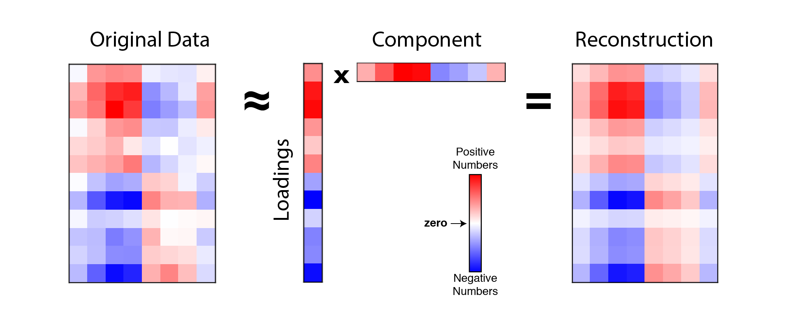
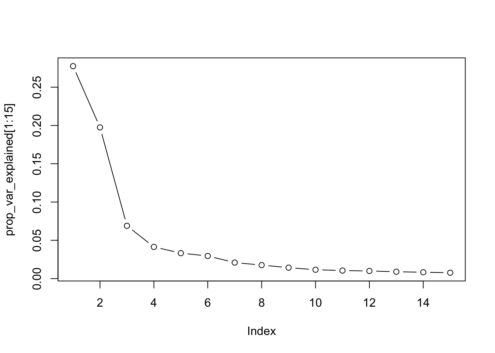

20 EDA with PCA
20.1 Introduction
In this tutorial, we will use the GEOquery package to download a dataset from the Gene Expression Omnibus (GEO) and perform some exploratory data analysis (EDA) using principal components analysis (PCA).
20.2 Downloading data from GEO
The GEOquery package can be used to download data from GEO. The getGEO function takes a GEO accession number as an argument and returns a list of ExpressionSet objects. The [[1]] at the end of the getGEO call is used to extract the first (and only) ExpressionSet object from the list.
Historically, it was not uncommon for GEO datasets to contain multiple separate experiments. In those cases, the [[1]] would need to be replaced with the index of the experiment of interest. However, it is now uncommon for GEO datasets to contain multiple experiments, but the [[1]] is still needed to extract the ExpressionSet object from the list.
ExpressionSet objects are a type of Bioconductor object that is used to store gene expression data. The as function can be used to convert the ExpressionSet object to a SummarizedExperiment object, which is a newer Bioconductor object that is used to store gene expression data. The SummarizedExperiment object is preferred over the ExpressionSet object so we immediately convert the ExpressionSet object to a SummarizedExperiment.
20.3 Filtering genes
When performing PCA, it is common to filter to the most variable genes before performing the PCA. Limiting genes to the most variable genes can help to reduce the computational burden of the PCA.
We can calculate the standard deviation of each gene using the apply function. The apply function takes a matrix as the first argument and a 1 or 2 to indicate whether the function should be applied to the rows or columns of the matrix. The sd function calculates the standard deviation of a vector and is performed on each row of the matrix.
A histogram of the standard deviations is not that useful, but it is easy to make.
Here, we produce a subset of the SummarizedExperiment object that contains only the 500 most variable genes. We’ll use this subset for the rest of the tutorial. Feel free to revisit the number of genes you choose to keep and see how it affects the PCA.
sub_se = se[order(sds,decreasing = TRUE)[1:500],]20.4 PCA
PCA is a method for dimensionality reduction. It is a linear transformation that finds the directions of maximum variance in a dataset and projects it onto a new subspace with equal or fewer dimensions than the original one. The orthogonal axes (principal components) of the new subspace can be interpreted as the directions of maximum variance given the constraint that the new feature axes are orthogonal to each other.

The PCA algorithm results in a rotation matrix that can be used to transform the original data into the new subspace. The rotation matrix is stored in the rotation slot of the prcomp object and represents the loadings of each gene for each principle component. The prcomp function also stores the coordinates of the samples in the new subspace in the x slot, which represents the locations of the samples in principle component space.
str(pca)List of 5
$ sdev : num [1:307] 27.01 22.78 13.46 10.43 9.35 ...
$ rotation: num [1:500, 1:307] -0.1091 0.0598 -0.0474 -0.0513 -0.0903 ...
..- attr(*, "dimnames")=List of 2
.. ..$ : chr [1:500] "209125_at" "209988_s_at" "223678_s_at" "218835_at" ...
.. ..$ : chr [1:307] "PC1" "PC2" "PC3" "PC4" ...
$ center : Named num [1:500] 6.86 5.56 7.99 10.39 7.82 ...
..- attr(*, "names")= chr [1:500] "209125_at" "209988_s_at" "223678_s_at" "218835_at" ...
$ scale : logi FALSE
$ x : num [1:307, 1:307] 0.571 -3.528 5.289 -31.486 1.273 ...
..- attr(*, "dimnames")=List of 2
.. ..$ : chr [1:307] "GSM748053" "GSM748054" "GSM748055" "GSM748056" ...
.. ..$ : chr [1:307] "PC1" "PC2" "PC3" "PC4" ...
- attr(*, "class")= chr "prcomp"The prcomp function also centers the data by default. The centering values are stored in the center slot. The x slot contains the coordinates of the samples in the new subspace. The
We can plot the samples using the first two PCs as the x and y axes.
plot(pca$x[,1], pca$x[,2], pch=20)If we use ALL the PCs, we can perform a matrix multiplication to get the original data back.
GSM748053 GSM748054 GSM748055 GSM748056 GSM748057
209125_at 4.400830 4.349534 3.661922 10.289194 3.354648
209988_s_at 3.078285 3.079797 3.467936 3.447669 3.141168
223678_s_at 11.389715 10.637554 5.956832 9.311594 10.467811
218835_at 13.541261 12.944545 9.725079 12.744177 12.896846
201820_at 5.056486 5.030666 4.986433 11.284134 5.132626Compare to the original data:
assay(sub_se,'exprs')[1:5,1:5] GSM748053 GSM748054 GSM748055 GSM748056 GSM748057
209125_at 4.400830 4.349534 3.661923 10.289194 3.354648
209988_s_at 3.078285 3.079797 3.467936 3.447669 3.141168
223678_s_at 11.389715 10.637554 5.956831 9.311594 10.467811
218835_at 13.541261 12.944545 9.725079 12.744177 12.896846
201820_at 5.056486 5.030666 4.986433 11.284134 5.132626And the same thing, but using only the first 3 PCs:
GSM748053 GSM748054 GSM748055 GSM748056 GSM748057
209125_at 4.302207 5.319141 4.660544 9.765880 4.368261
209988_s_at 3.509123 4.372072 4.644271 4.552902 4.251617
223678_s_at 12.637489 11.381274 10.702921 9.672075 11.985243
218835_at 14.587942 13.535895 12.807482 12.279706 14.037817
201820_at 5.300632 6.248694 5.741837 10.170421 5.39131020.5 Variance explained
Often, we want to know how much of the variance in the data is explained by each PC. The pca object has a slot called sdev that represents the standard deviation of the principle component. Variance is the square of sdev, so we can calculate the variance by squaring sdev.
var_explained = pca$sdev ^ 2The total variance is just the sum of all the variances:
tot_variance = sum(var_explained)And the proportion of the variance explained by each PC is then
prop_var_explained = var_explained/tot_variance
head(prop_var_explained)[1] 0.27748451 0.19747527 0.06892190 0.04138543 0.03325101 0.02956515If we plot the prop_var_explained, it is called a scree plot and can help us to choose an appropriate number of PCs to “keep” in order to reduce the dimensionality.
plot(prop_var_explained[1:15], type='b')
Examine the plot. How many PCs would you keep?
20.6 Add PCs to our SummarizedExperiment object
Recall that the x matrix stored in the pca object represent the coordinates of the samples in the new subspace. We can look at the first five rows and columns of the x matrix to see what it looks like.
pca$x[1:5,1:5] PC1 PC2 PC3 PC4 PC5
GSM748053 0.5712872 34.105929 15.208118 -4.738482 3.4101384
GSM748054 -3.5283223 24.664382 7.632319 -11.746590 0.1405872
GSM748055 5.2892621 21.841834 9.092392 -3.022823 11.7810845
GSM748056 -31.4864198 3.762922 -5.332805 9.695495 -8.8944295
GSM748057 1.2726085 30.640997 10.562888 6.294335 7.1601434So, PC components for each sample are in columns and samples are in rows. For colData, the samples are also in rows. So, we can join the PC values to the SummarizedExperiment, sub_se, for later use and for comparison to other sample metadata.
We now have the PCs stored conveniently with our SummarizedExperiment.
[1] "title" "geo_accession"
[3] "status" "submission_date"
[5] "last_update_date" "type"
[7] "channel_count" "source_name_ch1"
[9] "organism_ch1" "characteristics_ch1"
[11] "characteristics_ch1.1" "characteristics_ch1.2"
[13] "characteristics_ch1.3" "characteristics_ch1.4"
[15] "characteristics_ch1.5" "characteristics_ch1.6"
[17] "characteristics_ch1.7" "characteristics_ch1.8"
[19] "characteristics_ch1.9" "characteristics_ch1.10"
[21] "molecule_ch1" "extract_protocol_ch1"
[23] "label_ch1" "label_protocol_ch1"
[25] "taxid_ch1" "hyb_protocol"
[27] "scan_protocol" "description"
[29] "data_processing" "platform_id"
[31] "contact_name" "contact_laboratory"
[33] "contact_department" "contact_institute"
[35] "contact_address" "contact_city"
[37] "contact_zip.postal_code" "contact_country"
[39] "supplementary_file" "data_row_count"
[41] "age.at.surgery.ch1" "disease.free.survival.in.months.ch1"
[43] "follow.up.time..months..ch1" "gender.ch1"
[45] "histology.ch1" "pm.stage.ch1"
[47] "pn.stage.ch1" "pt.stage.ch1"
[49] "relapse..event.1..no.event.0..ch1" "status.ch1"
[51] "tissue.ch1" "PC1"
[53] "PC2" "PC3"
[55] "PC4" "PC5" 20.7 Variable relationships
Looking at relationships between variables can be a really useful way of generating hypotheses, performing quality control, and suggesting areas to focus in analysis. One common approach to looking at a few variables and their relationships is the “pairs” plot.
The GGally package has a function called ggpairs that can be used to generate a pairs plot for a few variables.
Take a look at this website and examine some variable relationships in the colData(sub_se). When working with ggplot (and ggpairs), you’ll likely want to convert the colData() to a data.frame first. See Figure 20.2 for an example.
ggpairs(as.data.frame(colData(sub_se)),columns=(c("PC1","PC2","PC3","histology.ch1")))`stat_bin()` using `bins = 30`. Pick better value with `binwidth`.
`stat_bin()` using `bins = 30`. Pick better value with `binwidth`.
`stat_bin()` using `bins = 30`. Pick better value with `binwidth`.The ggpairs function is very flexible and plays well with ggplot. Therefore, you can add aes() to the ggpairs function to add colors, etc. to the plot (see Figure 20.3). Look at other variables that you might want to include and style the plot to your liking.
ggpairs(as.data.frame(colData(sub_se)),columns=(c("PC1","PC2","PC3","histology.ch1")),
aes(color=histology.ch1, alpha=0.5))`stat_bin()` using `bins = 30`. Pick better value with `binwidth`.
`stat_bin()` using `bins = 30`. Pick better value with `binwidth`.
`stat_bin()` using `bins = 30`. Pick better value with `binwidth`.